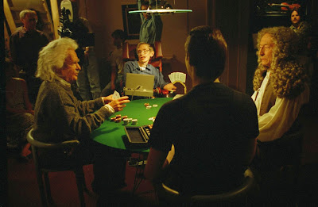

Ok. La doctrina Parot. Pero, ¿y la doctrina Botín?
Una vez mas me encuentro con montones de reacciones más y menos airadas rechazando que unos asesinos queden en libertad. El tono general es el de que para los criminales hay que aplicar las penas más severas posibles, siempre terminando la frase con algo del estilo de "con todo el peso de la ley" o al "amparo del estado de derecho". Sin embargo, más adentro se huele el ansia de venganza, la rabia y el desprecio. De vez en cuando, como por arte de magia, todas las miradas, todas las cámaras y titulares apuntan a Josebretones, Pachiderrenterias y Binládenes. Entonces la peña se calienta. Y lo de la ley y el estado de derecho pasa a las partes finales de frases y discursos, cuando no acaba del todo obviado. Es entonces cuando las leyes y normas se vuelven comúnmente aceptadas como flexibles y adaptables a circunstancias extraordinarias, transitorias o imprevistas.
Un hito en el desarrollo de esta especie es afirmar que todo ser humano tiene derecho a un techo y a recibir atención sanitaria. Sin embargo, es comúnmente aceptado que para tener una casa hay que tener dinero suficiente, y que quien no trabaja no tiene médico. Pues ya no es un derecho universal. Y es que los derechos no son obligaciones, y si la sociedad misma los niega, no hay más que decir.
El mecanismo mágico de la retroactividad abre un mágico e infinito mundo de posibilidades, donde todo puede pasar o no pasar. En la declaración universal de los derechos humanos se establece explícitamente que las leyes que se aplican sobre un individuo son las vigentes en el momento de cometer el crimen. De otro modo, esto sería el coño la Bernarda. Pero cuando la peña quiere carne, pues se hace una excepción y listo.
El gobierno es más listo que la sociedad, en el sentido de que toma mejores decisiones por contener menos contradicciones. Por eso cuando propone o acepta un trato es seguramente porque le beneficia. Y cuando se rompen los acuerdos es para mejorar sus condiciones, que suele implicar empeorar las condiciones de los ciudadanos y aldeanos. Primero entendimos que los parados extranjeros no tenían derecho a sanidad, y poco después de romper la universalidad del derecho, españoles nacidos en Burgos o Toledo con treinta años cotizados a la espalda se encuentran con que no hay cama ni quirófano hasta después de que la enfermedad se los lleve. Y, ¿qué hay del pacto del Estado con los que creyeron en las renovables? Resulta que ahora al gobierno y a sus exgobernantes consejeros, hoy en las compañías energéticas tradicionales, les fastidia que esos hippies de la energía limpia y sostenible acabaran siendo más eficientes que los gigantes del gas y el carbón. Pues se rompe el acuerdo y listo.
Con el asunto que inicia esta disertación, el de la retroactividad y, en concreto, la Doctrina Parot, pues ye lo mismu, oh. Yo tengo una ley muy elegante, pero cuando me viene bien cepillarme a alguien, pues se hacen unas modificaciones y unas anotaciones en el margen de la página, y listo! Y la gente aplaude la capacidad de adaptación de nuestras magníficas y orgánicas leyes. Ahora, una día te levantas por la mañana, el banco te lleva los ahorros de estos últimos veinte años y cuando vas a la sucursal de abajo a pedir explicaciones te encuentras sesenta policías disfrazados de Mazinger Z con libretas para aplicarte las recetas recogidas en el nuevo reglamento. Porque esta vez no es Parot el que molesta, esta vez eres tú.
Meanwhile, in the USA, se adaptaron las leyes para los nuevos tiempos de terrorismo Binladiano. Gracias al Sherif Bush, el mundo volvió a ser un lugar seguro. Diez años después, Estados Unidos, Lan of Fridon, parece a veces una cárcel y nos llevamos las manos a la cabeza porque Obama sabe que te guasasapeas por las noches con la amiga detu novia, y que la presi de Brasil va a impulsar un programa de ampliación de la producción minera en los próximos cinco años. Esa información es muy jugosa para quien necesita que le asesoren donde invertir diez mil millones de dólares.
Para colmo de fustigación, no solo aceptas que cambien las leyes que te protegen, si no que cuando se proponen cambios que te puedenbeneficiar, pues no los ves justos. La dación en pago para hipotecas contraídas bajo condiciones abusivas era apetitosa para millones de personas en verdaderos aprietos, aunque no era serio. Ya lo dijo UPyD: era retroactiva. Esa gante casi siempre tiene razón... ¿Porqué se acepta rizar la ley y modificarla hasta la mayor severidad posible con un tipo que secuestra a otro, y no se ve tan justificable hacerlo con bancos e instituciones financieras que secuestran naciones enteras? ¿Ha mencionado alguien algo así como la “doctrina Botín”? Yo no lo he oído. Y no es menos serio que un delito de terrorismo, porque mientras exista la libertad para secuestrar un país, no habrá sitio para ninguna otra libertad.
Ay, amigo, mío... Mucho cuidado con tu odio, tu rabia, tu sed de venganza, tu miedo... Todo lo que en ti no dominas, ten por seguro que vendrá algún tipejo a aprovecharlo para sus mezquinos asuntos. Como dice un amigo mío que no tiene dos dedos de frente, pero cuando abre la bocaza ilumina la sala diciando algo así como: “O jodemos todos o la puta al río”. Como la metáfora se hace un poco porno si sigo el razonamiento, diré: “O jugamos todos o rompemos la baraja”. Lo que quiero decir es que no hace falta romper la baraja, pero no te quedes sin jugar. Juega con los ojos y los oídos bien abiertos, que en toda mesa hay gente tramposa. Y, aunque no seas de los que se mueren por ganar, no permitas que el juego se vuelva aburrido.

Si esta civilización nuestra tiene la más remota ambición de ser civilizada algún día, no podrá andar camino alguno que no recorra, de un modo u otro, el marcado por los derechos humanos universales. Si la sociedad misma los entiende como condicionales o no universales, perderá con toda seguridad la posibilidad de hacerlos realidad algún día.
Para saber más aún dentro de DelightfulObservaciones:
http://delightfulobservaciones.blogspot.co.uk/2013/07/estan-robando-tus-suenos-y-tu-esfuerzo.html
http://delightfulobservaciones.blogspot.co.uk/2012/09/do-not-fuck-with-us.html
http://delightfulobservaciones.blogspot.co.uk/2012/09/de-un-punado-de-ovejas-el-mejor-de-los.html
http://delightfulobservaciones.blogspot.co.uk/2012/11/no-es-justo-yo-fui-la-huelga.html
http://delightfulobservaciones.blogspot.co.uk/2013/01/hemos-vivido-por-debajo-de-nuestras.html